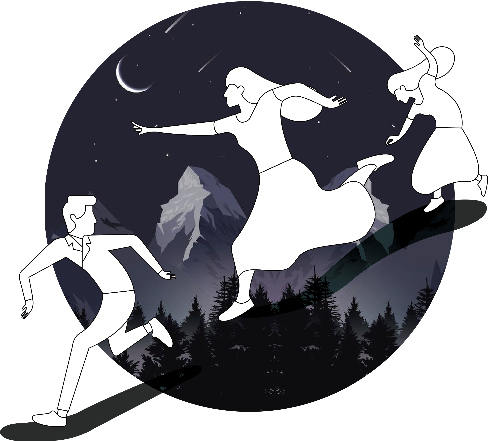

Build a Dream
and it
will build you.
Robert J.Shiuller

Robert J.Shiuller
모든 사람들은 세 번에서 일곱 번 꿈을 꾸지만, 잊어버리기 때문에 꿈을 꾸지 않았다고 생각합니다. 꿈은 현실에서 탈출해 우리의 마음 속으로 들어가 볼 기회를 주지만, 꿈속에서 일어나는 일들은 통제하기 어렵습니다. 만일, 지금 꿈을 꾸고 있다는 사실을 알고 마음대로 꿈의 내용을 조종할 수 있다면 어떨까요? 이것을 가능하게 하는 것이 바로 루시드 드림입니다.
Advantages of Lucid Dream
This is good for Lucid Dreams.
반복적인 일상 속에서 휴식이 주어지더라도 온전히 일상에서 벗어나 자유로운 시간을 보내기는 쉽지 않습니다. 꿈은 우리에게 모든 속박에서 벗어난 진정한 자유의 공간을 제공합니다.
우리의 매일은 잠에서 깨어나는 것으로 부터 시작됩니다. 깨어나기 직전의 꿈은 깨어난 이후의 심리 상태에 지대한 영향을 미칩니다. 루시드 드림을 통해서 긍정적이고, 좋은 기분으로 하루를 시작 할 수 있습니다.

우리의 매일은 잠에서 깨어나는 것으로 부터 시작됩니다. 깨어나기 직전의 꿈은 깨어난 이후의 심리 상태에 지대한 영향을 미칩니다. 루시드 드림을 통해서 긍정적이고, 좋은 기분으로 하루를 시작 할 수 있습니다.
자각몽에 너무 빠져서 꿈과 현실을 구분하지 못하게 되면 어떡하나요?
자각몽은 꿈에서 조차 꿈과 현실을 완전히 구분할 줄 알아야만 가능합니다. 그러므로 자각몽에 너무 빠져서 꿈과 현실 사이를 혼동하는 일은 그 자체로 모순입니다. 오히려 삶에서의 의식을 더욱 깨어있게 합니다.
자각몽에서 깨어나지 못하면 어떡하나요?
자각몽도 꿈입니다. 때가 되면 우리 몸의 수면 리듬에 맞게 자연스레 깨어나거나 꿈을 꾸고 있음을 잊고 비자각몽으로 돌아갑니다. 아무리 숙련된 사람이라도 두 시간 이상 자각몽을 꾸는 것은 거의 불가능합니다.
꿈 속에서 죽으면 정말로 죽나요?
일반적으로는 아니라고 보고있습니다. 만약 누군가가 꿈 속에서 죽는 바람에 생을 마쳤다면, 어떻게 그 이야기가 전해졌을까요? 오히려 꿈 속에서의 죽음은 매우 가치있는 경험으로 이어질 수 있습니다.